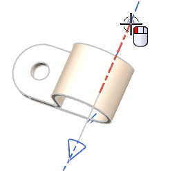
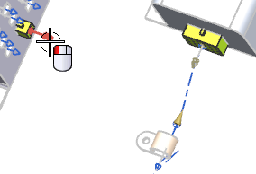
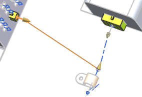
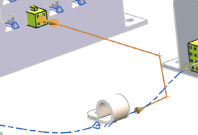
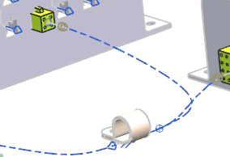
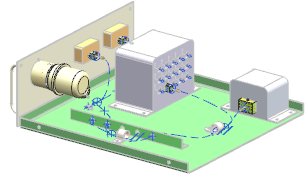
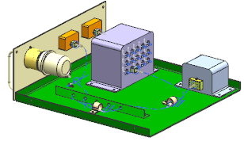

Create a segment between the new RCP and the connector in the control unit
Begin by creating a direct path.
-
On the Routing Electrical toolbar, from the Path Drop–down list, select Heal Path
 .
.
-
In the Settings group, from the Method list, make sure Direct is selected.
-
From the Generate section, select Splines.
-
Under Spline, make sure the Lock to Selected Object check box is selected.
-
Select the segment between the clamp and new RCP near the RCP end.

-
Select the multi port on the back of the 4–pin connector in the controller device.

A preview of the direct path is displayed.

-
In the Settings group, from the Method list, select Intersection.

You want the start of this new path (at the RCP) to bend into the clamp, so you can apply a start length to make it tangent to the other path.
-
In the Start group, for the Extension value, type 5, then 回车。
-
In the End group, the Extension value 13 is inherited from the port attributes on the 4–pin connector.

-
点击确定。
-
This completes the routing segments you will need.

-
Make rte1_drawer_assm_3 the Work Part.

-
Close all parts without saving.